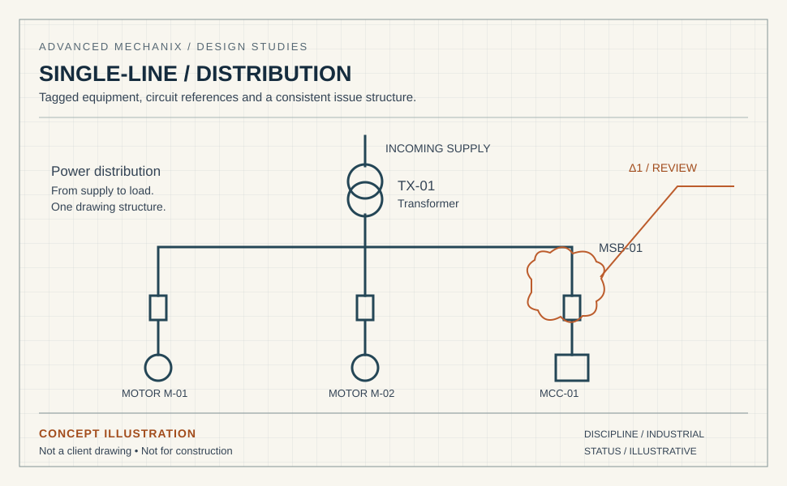

Arc flash study services — IEEE 1584 & NFPA 70E compliant.
Incident-energy calculations, protection coordination, and printable equipment labels. ETAP and SKM Power Tools. Reports suitable for OSHA and insurance review. First bus calculation free.
An arc flash study from Advanced Mechanix covers single-line verification, short-circuit and protection coordination analysis, IEEE 1584 incident-energy calculations at each relevant bus, NFPA 70E PPE categories and print-ready labels, produced in ETAP or SKM Power Tools. Small commercial sites (under 20 buses) typically take 2–3 weeks from receipt of accurate data; industrial sites of 50–200 buses take 4–8 weeks.
An arc flash study is only as accurate as the data behind it.
Most arc flash labels in industrial facilities are wrong. Not because the engineer who calculated them was wrong, but because the underlying single-line diagram, protection settings, or upstream fault data drifted out of sync with what's actually installed.
Our arc flash study services start with single-line and protection-data verification, not just IEEE 1584 number-crunching. The result is labels that match field reality and stand up to OSHA, insurance, and audit review.
- IEEE 1584-compliant incident-energy calculations
- NFPA 70E PPE category determination
- Protection coordination & short-circuit analysis included
- Print-ready labels per ANSI Z535 (adhesive, laminated, or metal)
- Five-year update cycle support
- First bus calculation free for new clients

Arc flash study deliverables
SLD Verification
Field-verified single-line diagram updated against actual installed equipment, breaker settings, and recent modifications.
Short-Circuit Analysis
Three-phase and single-phase fault calculations at every bus per IEEE / IEC methodology.
Protection Coordination
Time-current coordination study verifying selectivity and identifying mis-coordinated protection.
Incident-Energy Calculation
IEEE 1584 incident-energy at every relevant bus, including arc-flash boundary and approach-distance calculations.
NFPA 70E Labels
Print-ready ANSI Z535-compliant labels with incident energy, PPE category, and approach boundaries.
Mitigation Recommendations
Where incident energy exceeds Cat 2, we provide protection-setting and equipment-modification recommendations to reduce it.
Bus
Free
Send us your existing SLD and protection settings.
We'll perform an IEEE 1584 incident-energy calculation at one bus for free, so you can evaluate our quality before committing to a full study. No credit card, no retainer.
Your team. Our team.
A clear way to work.
Agree the standards, review responsibilities and working arrangements before the first issue.
Quality: who checks the drawings?
Every deliverable goes through multi-stage QA before issue: peer review, a senior check, verification against the code for your jurisdiction, and a check against your own drafting standards. Revision allowances and response windows are agreed as part of the project scope.
Standards: will you draw to our codes and templates?
We work to the standard that applies to your project: NEC (US), IEC 60364 and IEC 61439, AS/NZS 3000 (Australia and New Zealand), CSA C22.1 (Canada) and BS 7671 (UK). We draw inside your title blocks, layer conventions, cell and block libraries, not ours.
IP and NDA: what happens to our files?
A mutual NDA is signed before any source material is shared, and every engineer is bound by an individual confidentiality agreement. Project access is segregated per client and revoked when the engagement ends. If you prefer, we work inside your Citrix, VDI or client-managed VPN, so your drawings never leave your environment.
Stamps: who signs the drawings?
If your package requires a PE, Chartered Engineer or other statutory sign-off, tell us during scoping. We agree the responsible party and review requirements before production starts.
Time zones: when can we talk to the team?
Our production team is based in Pakistan (PKT, UTC+5). We agree your project’s working hours and handover arrangements during scoping. The table below uses a 09:00–18:00 PKT reference window to help plan the overlap; it is not a committed project schedule.
| Your time zone | Reference window, your clock | Overlap with your 09:00–17:00 |
|---|---|---|
| Perth — AWST (UTC+8) | 12:00–21:00 | 5 h (12:00–17:00) |
| Brisbane, Sydney — AEST (UTC+10) | 14:00–23:00 | 3 h (14:00–17:00) |
| Dubai — GST (UTC+4) | 08:00–17:00 | 8 h (09:00–17:00) |
| London — GMT (UTC+0) | 04:00–13:00 | 4 h (09:00–13:00) |
| New York — ET (EST, UTC−5) | 23:00–08:00 (overnight) | None — overnight handover |
| Los Angeles — PT (PST, UTC−8) | 20:00–05:00 (overnight) | None — overnight handover |
Daylight saving: Sydney, Melbourne, Canberra and Hobart move to AEDT (UTC+11) from October to April, cutting the overlap to 2 h (15:00–17:00); Queensland and Western Australia stay on standard time. UK summer time (BST, UTC+1) widens the London overlap to 5 h (09:00–14:00). US daylight time moves our day to 00:00–09:00 EDT and 21:00–06:00 PDT, so US teams can plan an overnight handover; the actual arrangement is agreed for your project.
Arc flash study questions
What does an arc flash study include?
What software do you use?
How long does an arc flash study take?
Do you provide the equipment labels?
Do you handle the data collection?
How often do studies need updating?
Five years since your last arc flash study?
NFPA 70E says it's time. Free first calculation while you decide.